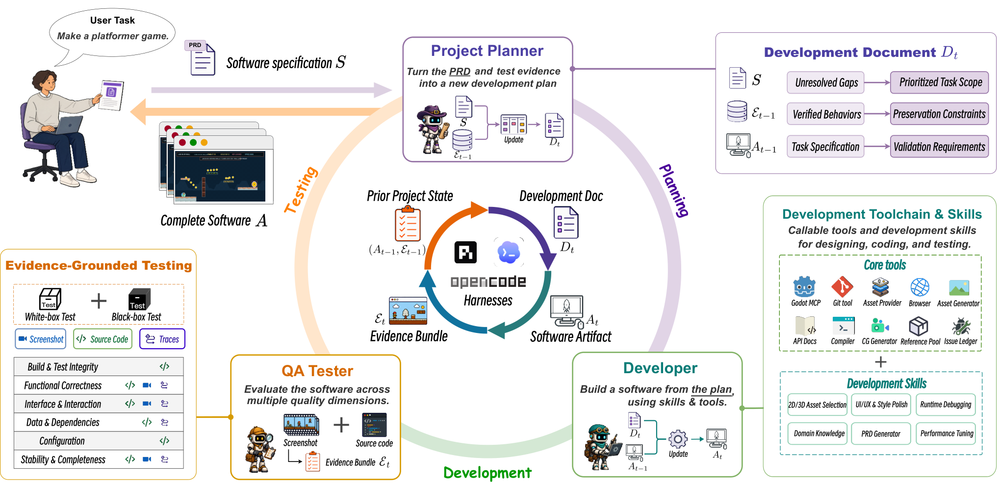
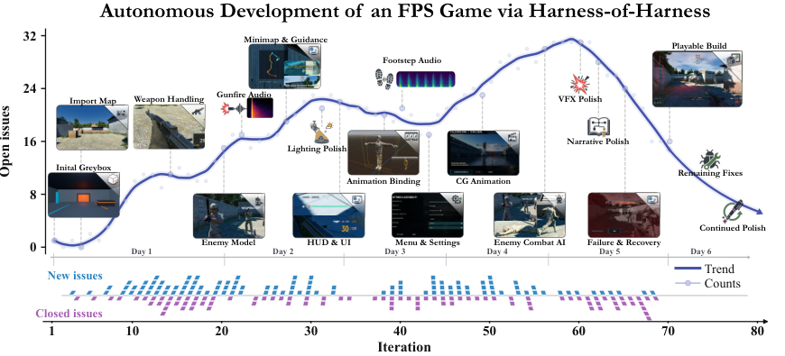

Harness-of-Harness: Multi-Day Autonomous Software Development with Continual Improvement
TL;DR
- "Harness-of-Harness: Multi-Day Autonomous Software Development with Continual Improvement" (arXiv 2609.01481; Haoyang Yan, Min-Le Su, Hangfan Zhang, Zhanhao Li, Chen Zhang, Shao Zhang, Yang Chen, Lei Bai, Shuyue Hu — Shanghai AI Laboratory; code released) wraps an unmodified coding-agent harness (Codex, OpenCode, Pi) in an outer planning–coding–testing loop that carries two states across iterations: the versioned software artifact \(A_t\) and an evidence state \(\mathcal{E}_t\) of verified behaviors and open gaps.
- The outer loop is deliberately thin: three roles (Project Planner, Developer, QA Tester) are three invocations of the same frozen harness–model pair under a deterministic Runtime that freezes each role's inputs, enforces read/write permissions, and retries outputs that violate the required schema. No memory module — artifacts live in the file system behind a categorized index with progressive disclosure.
- Three iterations lift final artifact quality across all three harness–model pairs on GameCraft-Bench (+16.62 to +22.08 points), FrontierSWE (Codex Dominance 44%→71%), and ProgramBench (+6.09 to +16.85 pass-rate points) — an average relative gain of 52.25% — and gains keep compounding: FrontierSWE Dominance reaches 76.00% at HoH@9 vs 27.33% for Vanilla. A 70-loop multi-day run builds a human-playable FPS game from a requirements document alone.
Why this matters
This is the strongest evidence yet for a thesis this tracker keeps returning to: the cheapest capability gains right now come from structuring how existing harnesses are invoked over time, not from touching the model or even the harness internals. HoH modifies nothing inside Codex/OpenCode/Pi — it is pure orchestration, a meta-harness in the literal sense — and still adds 20+ points on GameCraft-Bench and rises from 22% to 72.67% on FrontierSWE over ten loops with Codex + GPT-5.5.
The pass-controlled comparison is the part to internalize. The obvious null hypothesis is "you just ran the agent longer." The authors test it: Vanilla Continuation, which re-prompts the same session for extra passes, reaches 58.24 after three passes and 6.33M tokens; HoH@2 reaches 64.84 with 5.67M tokens. Structure beats raw iteration at matched pass and token budgets. That echoes what the Harness Handbook and Recursive Harness Self-Improvement found from the harness-editing side — but here the improvement loop operates on the software project, not on the harness code, which makes it deployable today on any stack.
It also lands directly on the long-horizon problem: sustaining coherent progress when trajectories outgrow any context window. HoH's answer — externalize state into a versioned artifact plus an explicit evidence ledger, and re-derive the next objective from both every loop — is the same shape as the manage–execute–audit loop in LongHorizon-Harness and the recoverable executable states of ScienceFlow, now validated at 70+ iterations over multiple days.
The core idea
Formally, HoH treats end-to-end development as applying a fixed harness–model pair to a specification:
where \(\mathcal{S}\) is the software specification, \(M\) the model, \(H\) the coding harness, and \(A\) the final software artifact.
The insight is that the next useful change cannot be read off \(\mathcal{S}\) alone — it depends on the current artifact (dependencies, constraints, missing capabilities) and on accumulated execution evidence (observed failures, validated behavior worth preserving). Since each harness invocation has bounded context, anything retained only in an invocation's interaction history dies with it. HoH therefore carries two complementary states across loop boundaries:
where \(A_t\) is the artifact state (source, config, resources, metadata) and \(\mathcal{E}_t\) the evidence state produced by independently evaluating \(A_t\). Evidence is explicitly partitioned:
with \(\mathcal{E}_t^{\mathrm{ver}}\) the verified behaviors (which become preservation constraints) and \(\mathcal{E}_t^{\mathrm{gap}}\) the unmet requirements and observed failures (which become candidate work). Artifact continuity makes development incremental; evidence-conditioned replanning makes it iterative. Neither state subsumes the other, and the ablations show both matter.

Figure 3 from the paper: each loop invokes Project Planner, Developer, and QA Tester around the evolving artifact; a deterministic Runtime freezes each role's inputs, enforces permissions, and binds evidence to the tested candidate.How it works
Each loop makes three decisions requiring different context and authority, assigned to three roles that are just three invocations of the same frozen harness–model configuration under role-specific prompts and a deterministic Runtime contract:
- Project Planner (read-only on \(A_{t-1}\)) reconciles \(\mathcal{S}\) with \(\mathcal{E}_{t-1}\) into a development document \(D_t\): a bounded but locally complete objective — one coherent observable capability plus the related changes needed to make it functional and testable — together with preservation constraints and validation conditions. Boundedness keeps diagnosis tractable; local completeness prevents collapse into isolated repairs.
- Developer (single writer) warm-starts from \(A_{t-1}\) and implements \(D_t\), free to pick its own design, tools, and debugging strategy. Testing is shift-left: establish a baseline for the target behavior before editing, then rerun after each meaningful change. Developer self-tests gate readiness but never grant acceptance.
- QA Tester (read-only, frozen candidate) derives scenario-specific checkable criteria from \(\mathcal{S}\) and \(D_t\), then collects black-box observations (inputs, rendered outputs, end-to-end flows) and white-box observations (source, config, logs, runtime state). A criterion is verified only when candidate-bound records support it; everything else is recorded as a gap — never inferred as success. The output is \(\mathcal{E}_t\).
The Runtime enforces the contract deterministically: it freezes role inputs, controls tool and write access, binds every observation to a single candidate identity, and rejects outputs violating the required schema (triggering a retry). Constraining verifiable outputs rather than prescribing workflows is the design principle throughout. Continuity comes from progressive disclosure (persisted artifacts behind a concise index, details retrieved on demand) plus versioned project history at role and iteration granularity, which allows rollback to previously verified states after regressions.
Algorithm: Harness-of-Harness (from Alg. 1 of the paper)
Input: specification S, initial artifact A0, iteration budget T
Fixed: model M, harness H, role contracts
E0 <- {} # empty evidence state
for t = 1..T:
# 1) plan: bounded, locally complete increment
Dt <- ProjectPlanner(S, E_{t-1}; read_only(A_{t-1}))
# 2) develop: single writer, warm-start, shift-left tests
At <- Developer(A_{t-1}; S, Dt)
# 3) independently verify the frozen candidate
Et <- QATester(read_only(At); S, Dt, Runtime.check(At))
# Et = verified behaviors ∪ gaps/failures
# Runtime: freeze inputs, enforce permissions,
# schema-validate outputs (retry on violation),
# version (At, Dt, Et) for rollback
return A_T
For the multi-day case study (only), HoH additionally gets role-organized domain tools — Godot MCP, asset retrieval/generation, git, an issue ledger — plus lightweight Markdown skills for asset style, UI/UX consistency, and testing. The benchmark runs use none of that: just the loop.
Results
Benchmarks (HoH@3 vs. Vanilla, identical harness–model pairs and initial states):
- GameCraft-Bench (45 tasks, playable Godot games): Codex + GPT-5.5 (high) 49.58 → 71.52; OpenCode + DeepSeek-V4-Pro 26.90 → 48.98; Pi + MiniMax-M3 42.16 → 58.78. All four rubric components (mechanics, content, functional visuals, art) improve under every configuration.
- FrontierSWE (15 tasks): mean reward 0.31 → 0.54 (Codex), 0.23 → 0.31, 0.26 → 0.55; Codex Dominance 44% → 71%. Extending to ten loops, Dominance climbs from 39.33% at HoH@3 to 72.67% at HoH@10 (peak 76.00% at HoH@9) against a fixed 11-checkpoint pool where Vanilla scores 27.33% — no plateau at the paper's budget.
- ProgramBench (rebuild a codebase from an executable + docs): pass rates 60.41 → 66.50, 45.27 → 57.56, 35.83 → 52.68.
- Pass-controlled: HoH@{1,2,3} scores 59.71/64.84/71.52 vs. Vanilla Continuation's 49.58/54.99/58.24; HoH@2 beats three-pass Vanilla with fewer tokens (5.67M vs 6.33M).
- Ablations (Codex, GameCraft): freezing the plan (−8.13), replanning without evidence (−6.28), and dropping artifact warm-start (−7.85, tokens 8.41M → 11.12M) all hurt — both carried states are load-bearing.
Fusepoint case study: from an empty workspace plus a PRD (five-minute single-player bomb-defusal FPS: two ordered control points, three-stage defusal, exactly 18 enemies in a 3/5/10 distribution, success and detonation branches), HoH with Codex CLI + GPT-5.6-Sol ran 70 loops over multiple days with human involvement limited to restoring network/API access. Development shows three phases — construction (loops 1–27, backlog grows as testability grows), capability expansion (28–49), stabilization (backlog declines). By loop 70: 81 issues recorded, 65 closed, 16 open, and 17 reopened after regressions — the reopened records making regression repair explicit planning input rather than something reconstructed from code.

Figure 1 from the paper: capability milestones and issue open/close dynamics across six days of autonomous FPS development.How it connects
- The meta-layer above harness evolution. Meta-Harness, HarnessDev, Harness-R1, and Recursive Harness Self-Improvement all improve agents by changing harness code. HoH holds the harness fixed and improves the project through repeated invocation — the improvement loop lives one level up, in orchestration. The two axes compose in principle: nothing stops HoH's roles from running an evolved harness.
- Evidence as the carried state. The \(\mathcal{E}^{\mathrm{ver}}/\mathcal{E}^{\mathrm{gap}}\) split — verified behavior becomes preservation constraints, gaps become work — is the same gated-update instinct as AutoSaddler (keeping only patches that help) and the performance gates in HarnessEvolve (arXiv 2609.00829, tracked this week), transplanted from harness updates to software increments. Reopened issues are its regression detector.
- Independent verification as the anti-reward-hacking mechanism. Freezing the candidate, read-only QA, and "record gaps, never infer success" is the eval-side discipline that Evolving Benchmarks argues self-improving systems need — here applied inside every loop rather than at the benchmark level. Notably, HoH's FrontierSWE gains are measured on the same benchmark this week's FrontierSWE v2 release (tracked) is hardening.
- Contrast with role-based multi-agent SWE. MetaGPT/ChatDev-style fixed role pipelines (discussed in the paper's related work) also use planner/dev/QA roles, but within a bounded episode. HoH's claim is that the cross-loop state contract — not the role decomposition — is what sustains multi-day progress; the ablations (plan freezing and evidence removal each cost 6–8 points) support that reading. See also the Survey: Self-Evolving Coding Agents for the broader design space.
Critical take
The headline numbers deserve two discounts. First, all evaluation of intermediate/final artifacts is rubric- or verifier-based on the benchmarks' own scoring; GameCraft's LLM-scored rubric components (visuals, art) may reward the kind of polish an iterative loop naturally accumulates, independent of functional depth. Second, HoH@3 costs ~3.2× Vanilla's tokens (8.41M vs 2.59M on GameCraft); the pass-controlled table blunts but doesn't eliminate the compute objection, since Vanilla Continuation is a weak continuation strategy — a best-of-n or fresh-restart baseline at matched cost isn't reported (inferred from the paper's tables — verify in the supplementary material).
The Fusepoint case is a single run, one game, with domain tools hand-provisioned for exactly that scenario — it demonstrates feasibility, not reliability, and 16 issues remained open at cutoff with a non-monotonic reopen rate. The deeper open question is whether the evidence ledger keeps working when QA's scenario-derived criteria are themselves wrong or incomplete: HoH's tester decides what counts as verified, and nothing outside the loop audits it. Still, as an existence proof that a thin, deterministic orchestration contract turns one-shot coding harnesses into week-scale developers — with every mechanism ablated — this is the most convincing entry in the genre so far.
If you remember three things
- Carry two states, not one: the artifact \(A_t\) plus an explicit evidence ledger \(\mathcal{E}_t\) split into verified-behaviors (preservation constraints) and gaps (work queue). Ablating either costs 6–8 points.
- Constrain outputs, not workflows: schema-enforced deliverables per role, deterministic Runtime for permissions and candidate freezing, full agent autonomy inside those boundaries.
- Structure beats iteration at matched budget: HoH@2 (5.67M tokens, 64.84) > three-pass Vanilla Continuation (6.33M tokens, 58.24); gains still compounding at loop 10 on FrontierSWE and loop 70 in the wild.